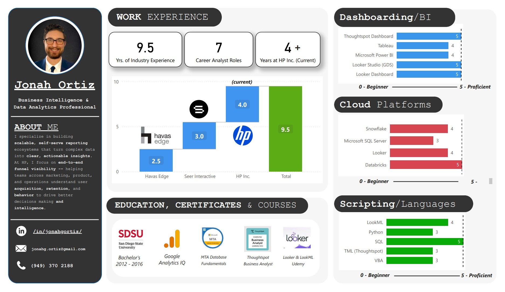

Welcome to My Website!
This website has a few different elements that bring it together. My HTML skills are pretty limited, but I wanted to showcase my ability to build something from scratch using AI tools. It was built primarily using OpenAI’s ChatGPT alongside other online resources.
- The chatbot on the left uses a combination of an n8n AI workflow and ChatGPT Assistant to answer questions about my work experience.
- The AI chatbot was designed with many prompts to constrain responses and provide relevant feedback.
- The HTML was primarily coded by ChatGPT, with myself guiding the structure and content.
Dashboard Example
This dashboard was generated using Microsoft Power BI. I'm also proficient in Tableau, ThoughtSpot, Looker, Data Studio, and more!
Summary
I specialize in building scalable, self-serve reporting ecosystems that turn complex data into clear, actionable insights. At HP, I focus on end-to-end funnel visibility—helping teams across marketing, product, and operations understand user acquisition, retention, and behavior to drive better decisions.
With 10 years in analytics and 4+ years in business intelligence, my work is rooted in simplifying data for strategic impact. I’m passionate about enabling organizations to act quickly and confidently by aligning analytics with business goals and empowering teams through accessible, cross-functional reporting.
Skills & Interests
- General Skills: Business Intelligence, Dashboards, Databricks, Snowflake, Looker, Agile Sprints, JIRA, GitHub
- Languages/Scripting: SQL, Python, LookML (Looker), VBA, ThoughtSpot Modeling Language (TML)
- Visualization Tools: Tableau, ThoughtSpot, Microsoft PowerBI, Looker, Looker Studio (GDS)
- Interests: Basketball – Playing & Watching! Golf, Camping & Hiking, Fitness & Weightlifting, Travel, Gaming
Experience
Business Intelligence Analyst III @ HP Inc. (HPQ)
May 2021 – Present | San Diego, CA / Telework
- Build and scale reporting ecosystems using Databricks and ThoughtSpot, enabling cross-functional teams to track user behavior and business outcomes across acquisition, activation, churn, and retention.
- Lead Analytics for Subscription Pilot services – Lead the Printer and PC as a service Pilots for our Subscription Services division, helping to build out end to end reporting funnels from acquisition all the way down to cancellation, churn and delinquency.
- Agile Methodology - Collaborate cross-functionally with Program, Marketing, and Operations teams in biweekly agile sprints, participating in regular internal scrums and program-specific standups; manage work through JIRA while remaining flexible to address high-priority ad hoc requests and evolving business needs.
- Help Scale Pilots to increase incremental Enrollees – Reporting out on net new 3.9k+ enrollments to these programs, representing $46M in projected annualized revenue to our subscription base.
- Developed full-funnel reporting from landing page to checkout, cancellation, and delinquency — supporting initiatives from a full customer journey perspective, migrating from ad-hoc reports to full funnel dashboards.
- Streamlined dashboard delivery by migrating legacy into ThoughtSpot using Databricks semantic layers, enabling self-serve analytics and reducing ad hoc reporting time by more than 40% across several programs and pilots.
Analytics Account Manager @ Seer Interactive
Feb 2020 – May 2021 | San Diego, CA
- Managed the end-to-end analytics strategy and implementation for a diverse portfolio of clients across multiple industries and verticals. Projects ranged from highly technical efforts—such as advanced data cleaning, custom tagging strategies, and event tracking setup—to broader, cross-functional initiatives spanning marketing, product, and engineering teams.
- Leveraged Google Analytics (GA4) and Google Tag Manager to establish clean, reliable data pipelines and event tracking frameworks, enabling actionable insights across digital touchpoints. Partnered with stakeholders to align KPIs and measurement plans with business goals, ensuring consistent data governance and scalable architecture.
- Transformed complex datasets into meaningful narratives using visualization and BI tools including Tableau, Power BI, and Looker Studio (formerly Data Studio). Delivered interactive dashboards and performance reports to inform decision-making at both the tactical and executive levels.
Senior Analytics Associate @ Seer Interactive
Jun 2019 – Feb 2020 | San Diego, CA
- Supported digital analytics strategy and reporting for smaller client accounts, focusing on delivering actionable performance insights.
- Utilized Google Analytics (Universal & GA4), Google Tag Manager, and Adobe Analytics for web and app tracking, tag validation, and user behavior analysis.
- Built dynamic dashboards using Power BI, Tableau, and Looker Studio to visualize campaign performance and key business metrics.
- Applied SQL for querying and data transformation to support reporting workflows and ad hoc analysis.
- Strengthened core skills in business intelligence (BI), dashboard building, and delivering impactful business insights through analytics.
Analytics Associate @ Seer Interactive
Jul 2018 – Jun 2019 | San Diego, CA
- Established the building blocks of a career in Digital Marketing through work in several technology stacks: primarily working in Google Analytics as a GA Agency Preferred Partner. Assisted in tag implementation, QA, and performance tracking across client websites. Developed foundational skills in Google Analytics, Google Tag Manager, and Looker Studio, contributing to data collection, dashboarding, and insights delivery.
Attribution Analyst @ Havas Edge
Aug 2017 – Jun 2018 | San Diego, CA
- Maintain and execute a portfolio of attribution models using Microsoft SQL Server, supporting both internal stakeholders and external client reporting needs.
- Deliver weekly campaign performance reports to account teams, offering actionable business insights to optimize media planning and campaign strategy.
- Microsoft SQL Server Management Studio (SSMS): DDL/DML querying, quality control, ETL workflows, attribution analysis.
- Microsoft Access: Data management and report generation.
- Microsoft Excel: Pivot Tables, Power Pivot, Macros, VLOOKUP, INDEX/MATCH, basic VBA scripting.
- ArcGIS: Geographic data visualization and spatial analysis.
- Business Intelligence Tools: Dashboard creation and data storytelling using Power BI and Tableau.
Media Analyst @ Havas Edge
Aug 2016 – Aug 2017 | San Diego, CA
Short Form Media Intern @ Havas Edge
Jun 2016 – Aug 2016 | San Diego, CA
Social Media Manager @ Dunstan Surfwear
Jan 2016 – Jun 2016
Sales Associate @ West Marine
Jul 2013 – Jan 2016
Education
San Diego State University – B.S. Business Administration
2012 – 2016 | San Diego, CA